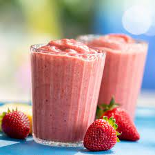

Strawberry Banana Freeze Smoothie

Ingredients
- 1 medium banana
- 1½ cups fresh strawberries
- 1 cup Almond Breeze Original or Unsweetened Original almondmilks
- ½ cup fresh or juice packed pineapple
- 1 tablespoon slivered or sliced almonds (Optional)
- 1 teaspoon flax seeds (Optional)
Directions
- Puree all ingredients in a blender until smooth.